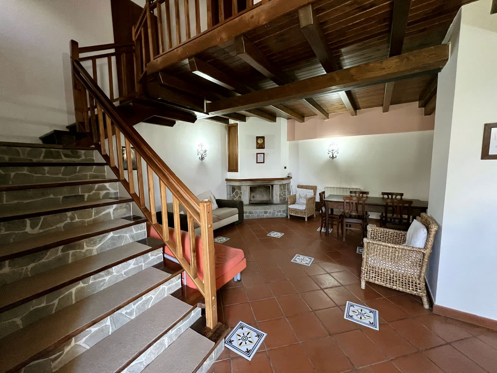

Il corpo centrale
Al piano terra un unico ambiente soggiorno-pranzo di circa cinquanta metri quadri, con angolo cottura e camino. Al primo piano due camere da letto, ciascuna col suo bagno.
- ~50 mq al piano terra
- camera 16,40 mq
- camera 14,00 mq
- 2 bagni